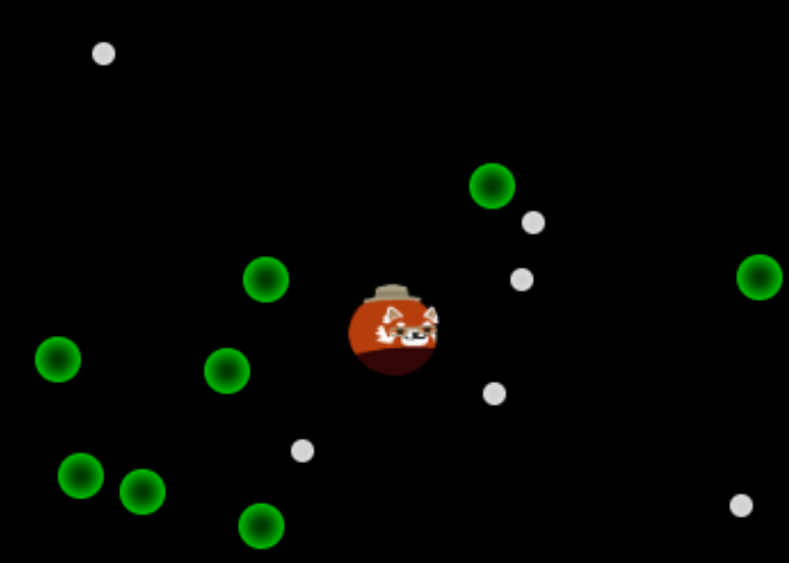
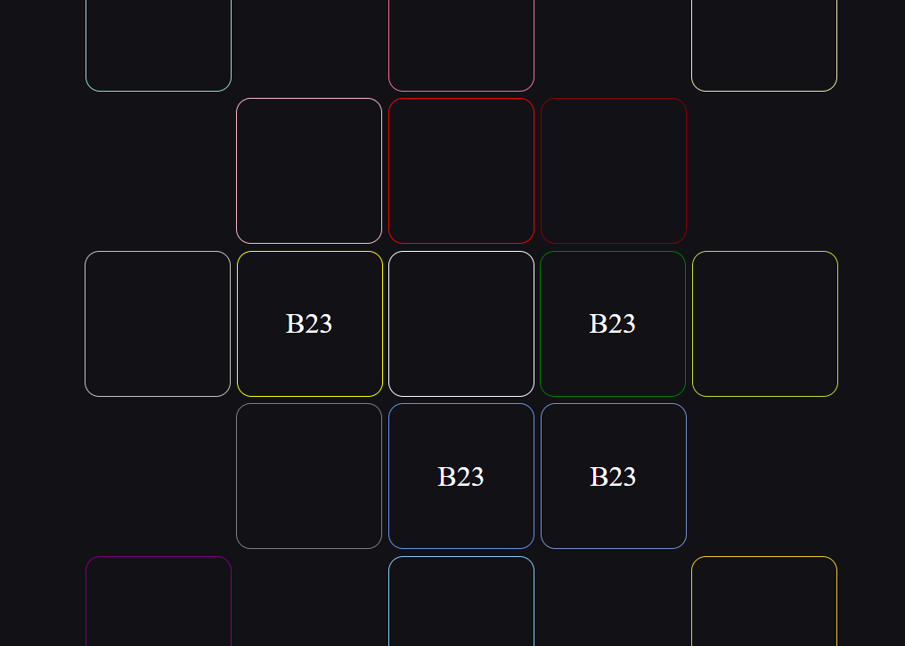

Checkbox Tetris 呈現了我對 JavaScript 和邏輯的熟練度，是我就讀大學的作品。俄羅斯方塊使用
SRS
規則旋轉。
未爆 展示了我對 CSS 控制的運用，是一款可以雙人合作的遊戲。

metatail 是一款短時間的彈幕遊戲，是我做給朋友的生日禮物。

TCSimulator 是我根據一款遊戲的
維基
寫出的迷宮模擬器。練習陣列處理資料技術。目的是幫助玩家尋找替代道路。還在閒暇之餘施工。